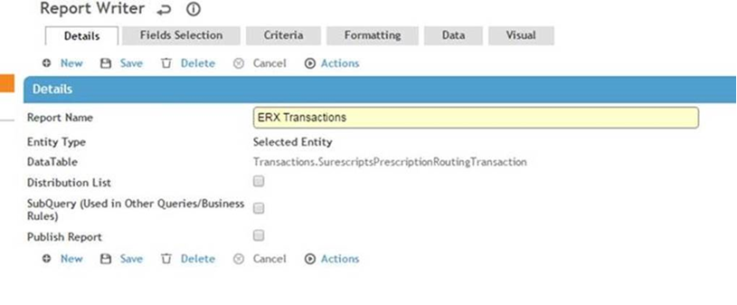

Use the following specification to create a report that will show all eRx transactions. This will allow you to see who created each transaction, the date and time when it was executed, and the message that was sent to Surescripts/Dr. First when prescribing.
